Matplotlib 是一个 Python 的 2D绘图库，通过 Matplotlib，开发者可以仅需要几行代码，便可以生成绘图，直方图，功率谱，条形图，错误图，散点图等。
用于创建出版质量图表的绘图工具库
目的是为Python构建一个Matlab式的绘图接口
import matplotlib.pyplot as pltpyploy模块包含了常用的matplotlib API函数
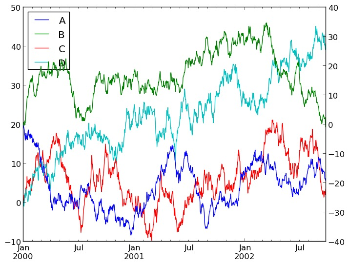
figure
Matplotlib的图像均位于figure对象中
创建figure：
fig = plt.figure()
示例代码：
# 引入matplotlib包
import matplotlib.pyplot as plt
import numpy as np
%matplotlib inline #在jupyter notebook 里需要使用这一句命令
# 创建figure对象
fig = plt.figure()
运行结果：
<matplotlib.figure.Figure at 0x11a2dd7b8>
subplot
fig.add_subplot(a, b, c)
a,b 表示将fig分割成 a*b 的区域
c 表示当前选中要操作的区域，
注意：从1开始编号（不是从0开始）
plot 绘图的区域是最后一次指定subplot的位置 (jupyter notebook里不能正确显示)
示例代码：
# 指定切分区域的位置
ax1 = fig.add_subplot(2,2,1)
ax2 = fig.add_subplot(2,2,2)
ax3 = fig.add_subplot(2,2,3)
ax4 = fig.add_subplot(2,2,4)
# 在subplot上作图
random_arr = np.random.randn(100)
#print random_arr
# 默认是在最后一次使用subplot的位置上作图，但是在jupyter notebook 里可能显示有误
plt.plot(random_arr)
# 可以指定在某个或多个subplot位置上作图
# ax1 = fig.plot(random_arr)
# ax2 = fig.plot(random_arr)
# ax3 = fig.plot(random_arr)
# 显示绘图结果
plt.show()
运行结果：
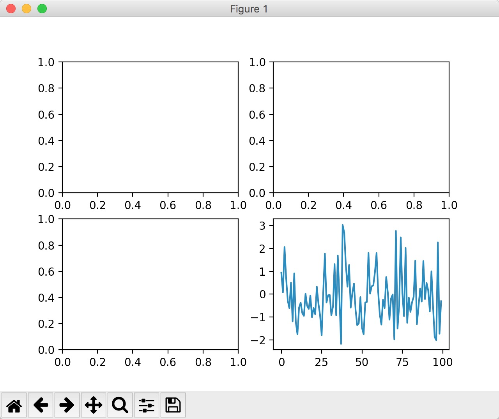
直方图：hist
示例代码：
import matplotlib.pyplot as plt
import numpy as np
plt.hist(np.random.randn(100), bins=10, color='b', alpha=0.3)
plt.show()
运行结果：
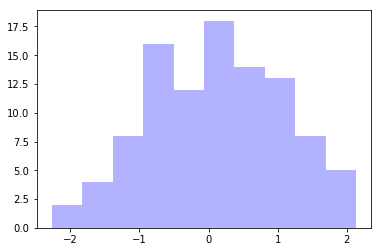
散点图：scatter
示例代码：
import matplotlib.pyplot as plt
import numpy as np
# 绘制散点图
x = np.arange(50)
y = x + 5 * np.random.rand(50)
plt.scatter(x, y)
plt.show()
运行结果： 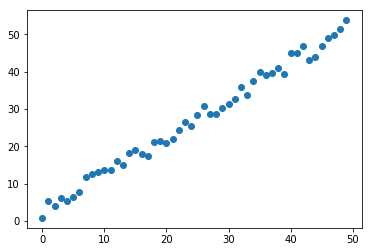
柱状图：bar
示例代码：
import matplotlib.pyplot as plt
import numpy as np
# 柱状图
x = np.arange(5)
y1, y2 = np.random.randint(1, 25, size=(2, 5))
width = 0.25
ax = plt.subplot(1,1,1)
ax.bar(x, y1, width, color='r')
ax.bar(x+width, y2, width, color='g')
ax.set_xticks(x+width)
ax.set_xticklabels(['a', 'b', 'c', 'd', 'e'])
plt.show()
运行结果：
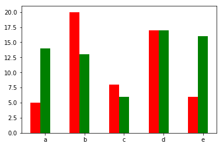
矩阵绘图：plt.imshow()
- 混淆矩阵，三个维度的关系
示例代码：
import matplotlib.pyplot as plt
import numpy as np
# 矩阵绘图
m = np.random.rand(10,10)
print(m)
plt.imshow(m, interpolation='nearest', cmap=plt.cm.ocean)
plt.colorbar()
plt.show()
运行结果：
[[ 0.92859942 0.84162134 0.37814667 0.46401549 0.93935737 0.0344159
0.56358375 0.75977745 0.87983192 0.22818774]
[ 0.88216959 0.43369207 0.1303902 0.98446182 0.59474031 0.04414217
0.86534444 0.34919228 0.53950028 0.89165269]
[ 0.52919761 0.87408715 0.097871 0.78348534 0.09354791 0.3186
0.25978432 0.48340623 0.1107699 0.14065592]
[ 0.90834516 0.42377475 0.73042695 0.51596826 0.14154431 0.22165693
0.64705882 0.78062873 0.55036304 0.40874584]
[ 0.98853697 0.46762114 0.69973423 0.7910757 0.63700306 0.68793919
0.28685306 0.3473426 0.17011744 0.18812329]
[ 0.73688943 0.58004874 0.03146167 0.08875797 0.32930191 0.87314734
0.50757536 0.8667078 0.8423364 0.99079049]
[ 0.37660356 0.63667774 0.78111565 0.25598593 0.38437628 0.95771051
0.01922366 0.37020219 0.51020305 0.05365718]
[ 0.87588452 0.56494761 0.67320078 0.46870376 0.66139913 0.55072149
0.51328222 0.64817353 0.198525 0.18105368]
[ 0.86038137 0.55914088 0.55240021 0.15260395 0.4681218 0.28863395
0.6614597 0.69015592 0.46583629 0.15086562]
[ 0.01373772 0.30514083 0.69804049 0.5014782 0.56855904 0.14889117
0.87596848 0.29757133 0.76062891 0.03678431]]
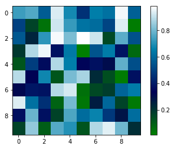
plt.subplots()
同时返回新创建的
figure和subplot对象数组生成2行2列subplot:
fig, subplot_arr = plt.subplots(2,2)在jupyter里可以正常显示，推荐使用这种方式创建多个图表
示例代码：
import matplotlib.pyplot as plt
import numpy as np
fig, subplot_arr = plt.subplots(2,2)
# bins 为显示个数，一般小于等于数值个数
subplot_arr[1,0].hist(np.random.randn(100), bins=10, color='b', alpha=0.3)
plt.show()
运行结果： 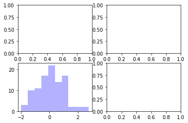
颜色、标记、线型
- ax.plot(x, y, ‘r--’)
等价于ax.plot(x, y, linestyle=‘--’, color=‘r’)
示例代码：
import matplotlib.pyplot as plt
import numpy as np
fig, axes = plt.subplots(2)
axes[0].plot(np.random.randint(0, 100, 50), 'ro--')
# 等价
axes[1].plot(np.random.randint(0, 100, 50), color='r', linestyle='dashed', marker='o')
运行结果：
[<matplotlib.lines.Line2D at 0x11a901e80>]
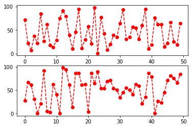
- 常用的颜色、标记、线型
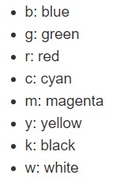
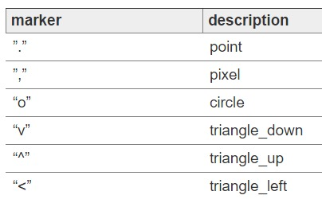
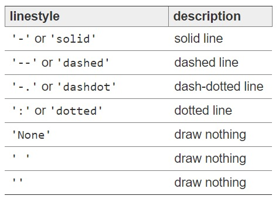
刻度、标签、图例
设置刻度范围
plt.xlim(), plt.ylim()
ax.set_xlim(), ax.set_ylim()
设置显示的刻度
plt.xticks(), plt.yticks()
ax.set_xticks(), ax.set_yticks()
设置刻度标签
ax.set_xticklabels(), ax.set_yticklabels()
设置坐标轴标签
ax.set_xlabel(), ax.set_ylabel()
设置标题
ax.set_title()
图例
ax.plot(label=‘legend’)
ax.legend(), plt.legend()
loc=‘best’：自动选择放置图例最佳位置
示例代码：
import matplotlib.pyplot as plt
import numpy as np
fig, ax = plt.subplots(1)
ax.plot(np.random.randn(1000).cumsum(), label='line0')
# 设置刻度
#plt.xlim([0,500])
ax.set_xlim([0, 800])
# 设置显示的刻度
#plt.xticks([0,500])
ax.set_xticks(range(0,500,100))
# 设置刻度标签
ax.set_yticklabels(['Jan', 'Feb', 'Mar'])
# 设置坐标轴标签
ax.set_xlabel('Number')
ax.set_ylabel('Month')
# 设置标题
ax.set_title('Example')
# 图例
ax.plot(np.random.randn(1000).cumsum(), label='line1')
ax.plot(np.random.randn(1000).cumsum(), label='line2')
ax.legend()
ax.legend(loc='best')
#plt.legend()
运行结果：
<matplotlib.legend.Legend at 0x11a4061d0>
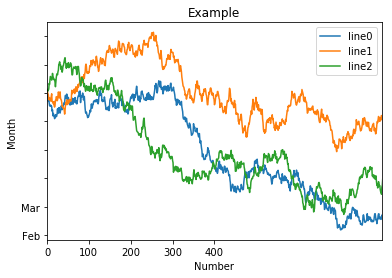